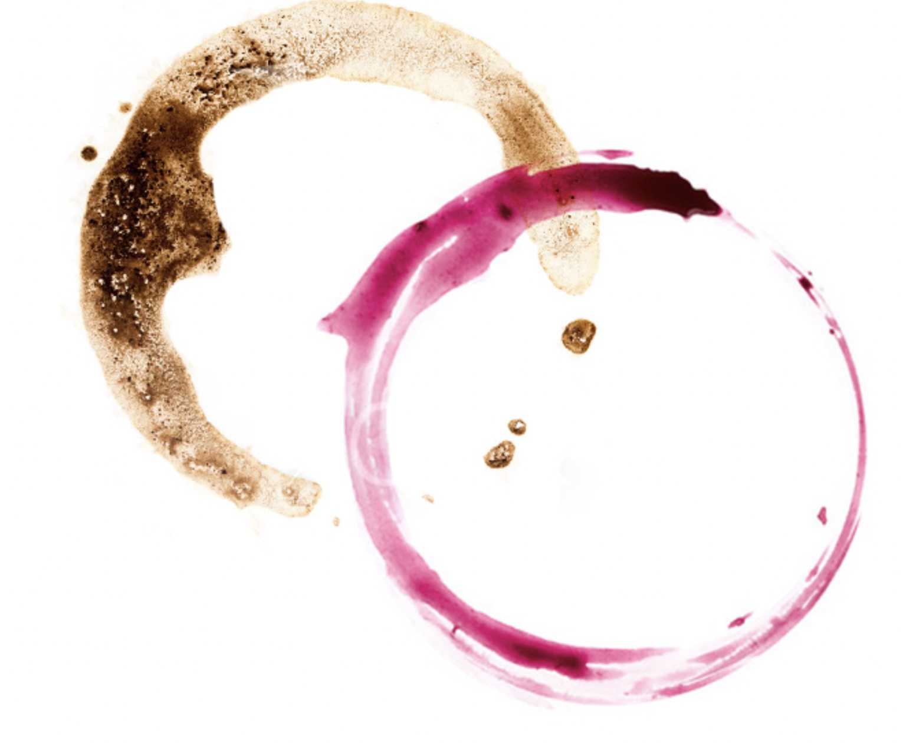
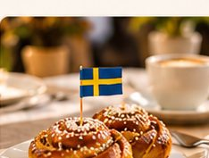
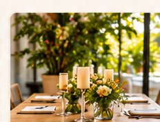
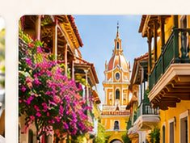

01
Recharge
Step away from the rush. Enjoy coffee, Swedish-inspired pastries, and a moment to reset.
The fika tradition
Thoughtfully curated moments inspired by Swedish fika and the warmth of wine, tapas, and togetherness.

In Sweden, fika is the ritual of slowing down over coffee and something sweet. It is time set aside for conversation, connection, and a welcome pause in the day. We bring that spirit together with the sociable tradition of sharing wine and tapas.
Step away from the rush. Enjoy coffee, Swedish-inspired pastries, and a moment to reset.
Settle into the easy rhythm of wine, tapas, and the pleasure of sharing a table.
Turn an ordinary meeting or celebration into a shared experience people remember.
A good workplace culture is built through everyday moments, not just big meetings. Fika creates space for colleagues to step away from their screens, talk, and reconnect.
Our hosted fika experiences bring the tradition to team gatherings, employee appreciation days, client meetings, and workplace celebrations—without turning the break into another agenda item.
Bring Fika to Your TeamFrom a thoughtful afternoon pause to a memorable evening gathering, we curate the details so you can enjoy the moment.

Swedish-inspired coffee and pastry experiences for teams, meetings, client appreciation, and company culture events.
Relaxed, hosted gatherings that pair the fika spirit with wine, beer, and tapas through our event partners.

Intimate celebrations, team milestones, and curated experiences shaped around your guests and occasion.

Take your team beyond the ordinary with destination kickoffs, conferences, and sales meetings in Bogotá, Barranquilla, Cartagena, or Colombia’s Coffee Region (Zona Cafetera). Tailored programs bring business, culture, and connection together.
Menus, availability, and alcoholic beverage service are subject to partner arrangements and applicable licensing.
Fika & Wine grew from our own story. Liliana is Colombian, with roots in Miami and a childhood shaped by Sweden. She moved to Sweden at nine, then to the United States at fifteen. Years later, she returned to Sweden to pursue a master’s degree—and met Andreas.
Andreas is Swedish through and through. He has traveled widely, but had never made a home abroad until love brought him to Miami. Together, we discovered how naturally Swedish fika and Latin hospitality belong at the same table.
We created Fika & Wine to share that feeling: an invitation to slow down, open up, and enjoy being together. Not just catering. A reason to connect.
— Liliana & Andreas
Planning a team gathering, client experience, or private celebration in Miami or South Florida? Tell us what you have in mind.
We are currently gathering interest for our first curated experiences.
This preview uses your email app to prepare an inquiry. Add your business email in the site settings before publishing.